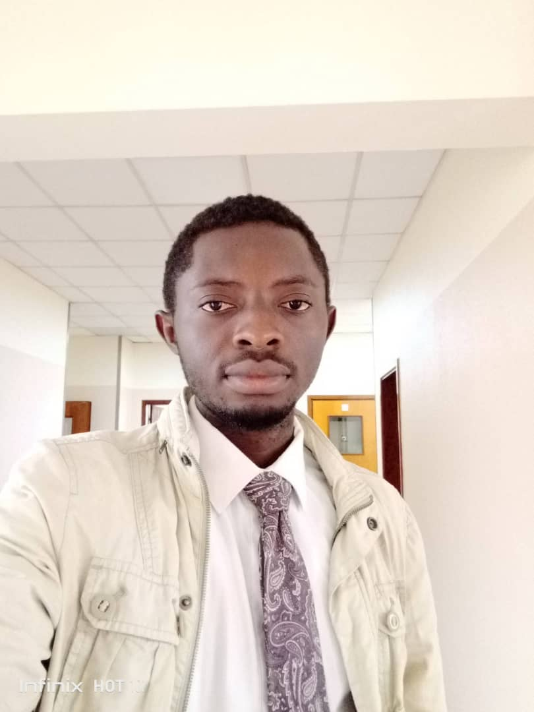

About Me

Jacques Kipoy 😎
Hello everyone, my name is Jacques Kipoy, I am from The Democratic Republic of the Congo in Kinshasa,
I want to become a Web developper and a Software engineer, I really like computer programming and Web developpement.
I want to persue this education because I have a really passion to become a Software Engineer
and Web developper so I can help people to solve their problems through technology.
I am actuaclly studying Software Engineering because this is what will lead me to my future career
, and give me the opportunity to work from anywhere in the world, that's one of the great advantage of this career.
I am single, after returning from my full time mission in West Africa,
I decided to study at BYU Idaho, because it offers the best educaton.
Some of my hobbies are playing the piano 🎹, basketball 🏀, football ⚽ and pool table,
I also have a passion for music 🎼, I am the music director in my ward and clerk. 🙄 😎